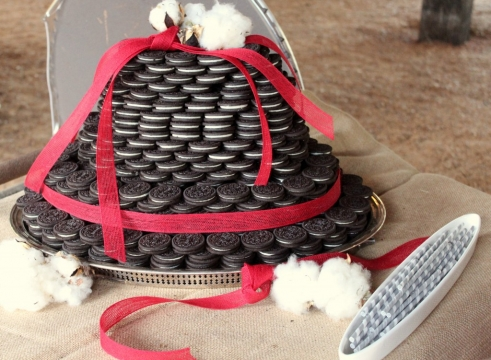

.png)
.PNG)
.PNG)
.PNG)
.PNG)
.PNG)
.JPG)
.JPG)
.PNG)
.PNG)



Happy Weekend! I hope you are enjoying these last few days of summer and that you have the holiday off on Monday. (Hallelujah I do!) Last week for our weekend wanderings we looked at school related inns, parties, and recipes after a week of school house posts. For this weekend, I would like to wander around barns…continuing the theme from yesterday’s post on my niece’s barn wedding.
The first one I want to share with you is the one at the top of the hill in the photo above. This 80 year old barn has been converted into the main house lodge at Cataloochee Ranch – the place my husband and I spent our honeymoon. We had both previously skied at their ski resort, but staying at the ranch was something quite different. When we arrived (in early August) it was so cool at the 5000 ft. elevation, there was a fire in the glorious old stone fireplace, and a grilled steak picnic dinner was waiting out back on the blue checked tablecloths. What a wonderful place to stay – honeymoon or not!
Second on our list of barns to wander around in is this amazing home designed by my favorite architectural firm – Historical Concepts. It is actually new construction made to look old. The owners wanted their home to look like an old barn, so they used elements of old farm buildings and reclaimed wood to create this very rustic home. Follow the links to see the interior. It is gorgeous!
Next is a North Carolina barn that has been converted into a place solely for entertaining. (Doesn’t everyone need a party barn?! 🙂 ) There is a neat story about how this came to be, so make sure you go to the link at Garden and Gun and read the full article. (And there are more interior shots!)
I can’t do a weekend post without some related recipe. So the closest thing I can get to “barn food” is this recipe for haystacks. (Get it, ha ha! 🙂 ) Loved these as a child and could probably still stuff myself silly with them today. They would be a good treat on this holiday weekend.

If you happen to be near the Georgia coast, there is a barn on St. Simon’s Island where you should dine. It is Bennie’s Red Barn, and they have a great salad, very good seafood and steaks, and a wonderful rustic interior.
And I have saved the best for last. A week or so ago, I sent you over to Meg’s blog to check out her kitchen with the schoolhouse globes. Well….she helped host the wedding rehearsal dinner for the son of some friends of hers. It was in a barn! And it is a clever, creative, cute, and charming party. You will love it! Aren’t these flowers and candles wonderful?!

That’s all for this week’s wanderings. Have fun with the links today, & enjoy the rest of your weekend!
What are you doing for the Labor Day holiday?


.PNG)
Kelly,
I really enjoyed reading about the Tew’s party barn. I’ve always wanted a cuppula, just haven’t figured out where it would go. Yes, the last image of the great flower arrangement and candles was the best.
Have a relaxing 3 day weekend.
Karen
————————————————————————
Karen – That is an unusual thing to want. I like them with weathervanes on the top…but it never crossed my mind to put one on my house. But now that I think about it, it would be perfect on the top of the garage. Hmmmm….will ponder this some more. I loved those candles lit in the jars!
Kelly
OMG. I fell in love with Historical Concepts. The thought of inviting friends over to our new home, only to see their faces when they see an old barn, cracks me up,lol. Looking at the pics, I could so see my husband and I living in such a place.
———————————————————————-
Mora – That is such a funny idea! I had never thought of it like that, but it would be true! Wouldn’t it be fun to have a house like that and in a location like that? Thanks for your comments!
Kelly
As always Kelly, your posts are wonderful! Our minds think so much alike it is scary! Just so you know, oldest daughter took me fabric shopping with her today for family room drapes. More sewing in my future
———————————————————————-
Wanda – I’m glad you liked the little post! You need to lock up your sewing machine! But I am not one to talk since I am helping a friend make hers today, too. 🙂 The ability to sew is a handy dandy skill when it comes to home décor.
Kelly
Love the Historical Concepts house!
I got lost reading Meg’s blog and almost didn’t make it back here!
No plans here…we have our boy in from college though!
———————————————————————
Phyllis – When I was putting the link in to Meg’s blog a week or so ago I thought, “Hmmm…I may lose my readers if they find their way over there.” Her house and all are just wonderful. So I knew I HAD to send you all there – even if you never came back. But I am glad you made it back! We have our daughter here too for the weekend. I know you are enjoying having your son home (so that you don’t have to text him so much – ha ha.)
Kelly